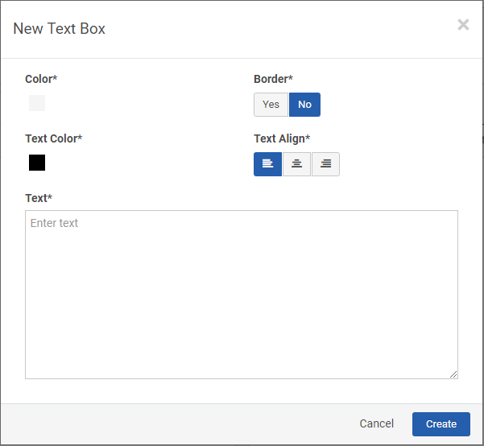
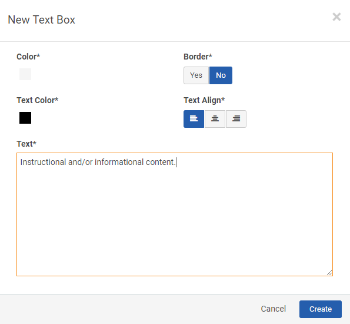

Adding a Text Box on a Portal Page
To Add a Text Box on a Portal Page:
- In the Portal, navigate to a Portal Page, and then click the Page Settings icon.
- On the Page Settings window, click +Text Box.
The New Text Box window appears.

- To select the background color of the text box, click the color box, and then click a color from the options displayed.
- If you want a border for the textbox click yes under Border.
- To select the Text color that will be in the text box, click the Text color box, and then click a color from the options displayed.
- To edit the text alignment that is to be displayed in the textbox, under Text Align, click align left, center, or align right.
- Input content into the Text textbox.
- Click Create.
